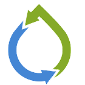
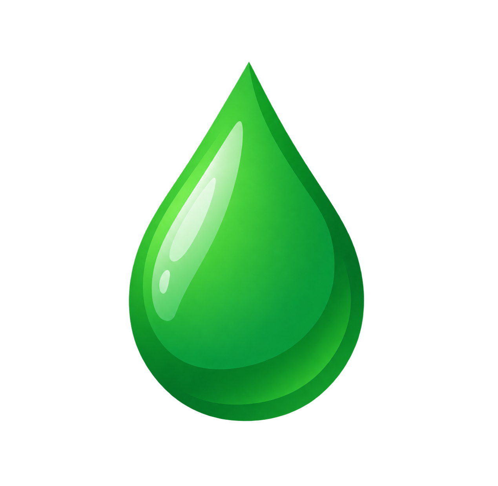

Plano da empresa expira em 12 dias
Renove até 30/11/2026 para manter o monitoramento e o histórico ativos.
Hoje, 10:24
AquaFlow Gestão Inteligente de ReservatóriosAtualizações do plano e do sistema
Renove até 30/11/2026 para manter o monitoramento e o histórico ativos.
Hoje, 10:24O documento do plano Business já pode ser consultado no painel administrativo.
Hoje, 09:50Última sincronização concluída sem falhas críticas nos reservatórios.
Hoje, 09:32Conta principal da empresa
Nível de água
3.900 de 5.000 L
Nível de água
2.000 de 2.000 L
Status da fonte

Abastecimento
Ligue ou desligue as bombas e acompanhe o estado atual.
| Bomba | Função | Estado | Controle |
|---|